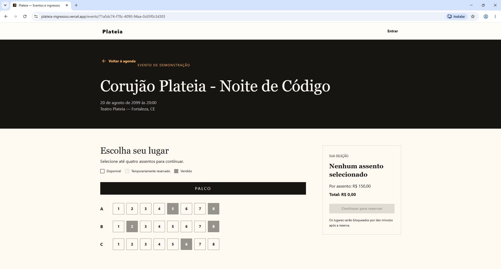

Estudo visual · Conteúdo em revisão
Plateia Ingressos
Esta página testa a composição de um estudo de caso. A descrição técnica do projeto ainda precisa ser conferida com código, documentação e capturas atuais.

Visão geral
O portfólio anterior apresentava Plateia Ingressos como um projeto para eventos. A imagem acima foi recuperada dessa versão. A descrição atual do produto e seu estágio de implementação ainda precisam ser verificados.
O problema
Este espaço foi reservado para explicar o problema real enfrentado pelo projeto, com contexto, restrições e evidências. O texto será escrito após revisão do material de origem.
A solução
Fluxos e funcionalidades serão descritos aqui somente após confirmação no repositório ou em uma demonstração atual. A imagem histórica serve como referência visual, não como prova de entrega.
Decisões de engenharia
Arquitetura, stack, tratamento de concorrência e testes dependem de análise do código. Nenhuma decisão técnica foi atribuída ao projeto neste estudo visual.
Aprendizados e trade-offs
Esta seção aguarda notas do autor sobre decisões tomadas, alternativas consideradas e o que mudou durante a implementação.
Resultado
O resultado verificável neste repositório é o estudo de composição desta página. Métricas, escopo entregue e links de demonstração serão acrescentados após confirmação.